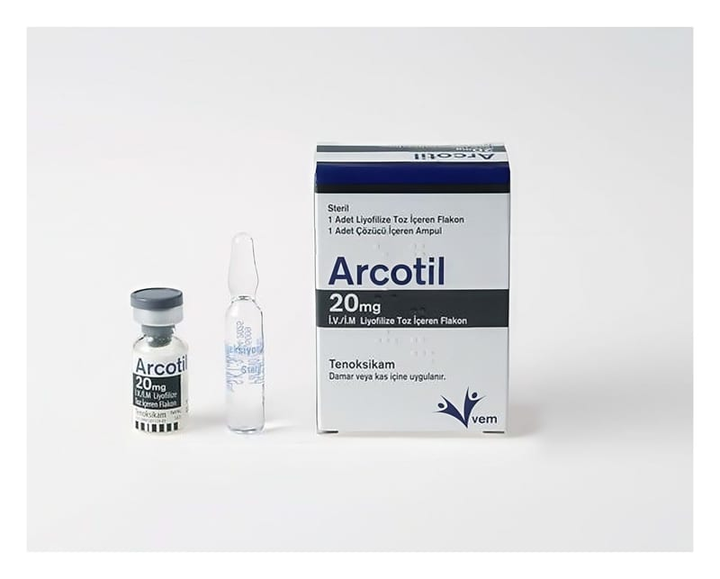

Arcotil 20 mg IV/IM Liyofilize Toz İçeren Flakon

Ne için kullanılır
KT · Bölüm 1 ARCOTİL etkin madde olarak her flakonda 20 mg tenoksikam içerir. ARCOTİL sarı renkli liyofilize bir tozdur. 20 mg tenoksikam içeren renksiz 3 mL’lik flakonlarda ve çözücü olarak 2 mL’lik enjeksiyonluk su içeren ampullerde kullanıma sunulmaktadır. ARCOTİL’in etkin maddesi tenoksikam, antiinflamatuvar (iltihap giderici) ve antiromatizmal (romatizmal hastalıkların tedavisinde) etkili non steroid antiinflamatuvar (NSAİ) olarak adlandırılan bir ilaç grubuna dahildir. Bu belge 5070 sayılı Elektronik İmza Kanunu uyarınca elektronik olarak imzalanmıştır. Doküman https://www.turkiye.gov.tr/saglik-titck-ebys adresinden kontrol edilebilir. Güvenli elektronik imza aslı ile aynıdır. Dokümanın doğrulama kodu : 1S3k0RG83ZW56ZW56Z1AxSHY3YnUy Bu belge 5070 sayılı Elektronik İmza Kanunu uyarınca elektronik olarak imzalanmıştır. Doküman https://www.turkiye.gov.tr/saglik-titck-ebys adresinden kontrol edilebilir. Güvenli elektronik imza aslı ile aynıdır. Dokümanın doğrulama kodu : 1S3k0RG83ZW56ZW56Z1AxSHY3YnUy
ARCOTİL, kireçlenme (osteoartrit), eklemlerde ağrı ve şekil bozukluğuna neden olan romatoid artrit hastalığı ve sırt eklemlerinde sertleşme ile seyreden ağrılı ilerleyici bir romatizmal hastalık olan ankilozan spondilitin belirti ve bulgularının tedavisi ile damla hastalığı (akut gut artriti), akut kas iskelet sistemi ağrıları, ameliyat sonrası ağrı ve ağrılı adet tedavisinde etkilidir.